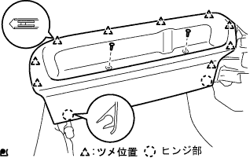
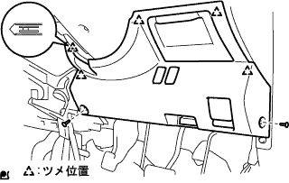
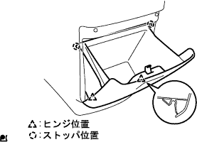
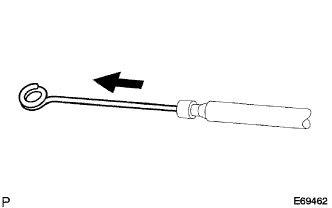
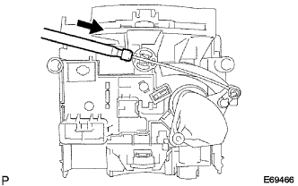
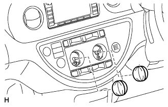
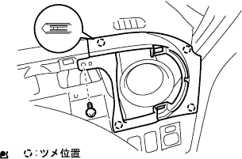

Installment panel SUB-ASSY LWR installation |
| 1. Bolts, screws, nut lists |

| 2. Installation panel lower W/Reinforce Installation |
Attach the instrument panel register rh RH to the instrument panel LWR with three screws <b>.

The door control computer with recever and smart key computer (smartly equipped car) are installed on the instrument panel rein Housing with bolts.
With screws << f or g or h >> 1, clip << B >> 2, attach the instrument panel rein horsement to the instrument panel LWR.
Temporarily place the instrument panel loower w / reinforcement, and connect each clamp and connector.
Attach the instrumental panel w / reinforce with bolts <a> 8 <a> 2 <E> 2 pieces, clips <b> 1, nuts <K> 2 pieces.
Attach the parking brake pedal and the bolt at the top of the brake pedal.
| 3. Installation panel to cowl breath CTR installation |
 |
Attach the instrument panel tsoul breath CTR with bolts <e> 1 and 1 nut <k>.
| 4. Cowl side trim board LH installation |
 |
Combine two claws and one clip, and attach the cowl side trim board LH with a resin clip.
| 5. Cover mounting |
Combine the claws and attach the cover.
| 6. Installation panel Anda cover SUB-ASSY No.1 Installation |
|  |
The hinge portion at the bottom of the instrument panel and cover No.1 is combined with nine claws and clips <a> 2 pieces of the instrument panel and cover No.1.
| 7. Radio tune opening cover W/Bracket installation |
With four screws, attach the radio tune opening cover W/bracket.
| 8. Radio receiver ASSY W/Bracket installation |
 |
Take off the four screws.
Cut each connector and remove the radio receiver ASSY W/bracket.
| 9. Navigation receiver ASSY W/Bracket Installation |
 |
Take off the four screws.
Cut each connector and remove the navigation receiver ASSY W/bracket.
| 10. Steering column ASSY installation |
 |
Insert the steering column ASSY from the front and clamp the steering column clamp to the instrument panel rein horsement ASSY.
Attach the steering column ASSY with three bolts.
The match between the steering interim day is No.3 and the steering sliding yoke together and attach the mark.
Steering sliding York bolts at both ends.
Connect each connector.
Clamp the wire harness to the steering column.
| 11. Confirmation of the front tire straight state |
Confirm that the front tires are in a straight state.
| 12. Column Shift Parking Lock Cable ASSY connection |
With bolts, tentatively attach the parking lock cable (pedal side).
Connect the parking lock cable to the column ASSY.
Parking lock cable inspection / coordination (guidelines)
See) Bolt is tightened later.
| 13. Column Shift Transmission Control Cable ASSY connection |
From the engine side through the control cable and attach the bracket with a nut.
In the clip, attach the control cable to the control cable bracket.
With a nut, connect the control cable to the transxle.
 |
Attach a new clip to the cable bracket and attach the control cable to the column ASSY.
Put the shift lever in the N range and press to the P range side, pull the control cable end part, and attach the control cable to the Velcank with a nut with the backlash eliminated.
| 14. Steering column hole cover plate installation |
 |
Attach the steering column hole cover plate with two clips.
| 15. Wind Shield Wiper Switch Assy Installation |
 |
Attach a windshield wipas switch by adjusting the claws.
Connect the connector.
| 16. Mounting headlamps |
 |
Attach the claws and attach the horn lamp damus tsuzuchi assy.
Connect the connector.
| 17. Spiral cable SUB-ASSY installation |
Make the turn signal switch in a neutral position.
Attach a spiral cable by combining three places of claws.
Connect a connector and connector for air bats.
| 18. Spiral cable centering |
Confirm that the IG Suitsu is OFF (Lock).
Confirm that the battery's minihana stormy has been removed.
 |
Turn the spiral cable until it locks in the counterclockwise direction.
 |
Return 2.5 turns back in the clock direction from the swinging position of the spiral cable, and match the center mark in the figure.
| 19. Shift lever position inspection |
The shift lever shifts from N range to each range.At this time, the shift lever can be operated smoothly, moves moderately in each range, and confirms that the position indicator is displayed and the shift lever is matched.
Make sure that you can shift to each range of P, R, and L only when the shift lever is pulled to the front.
Start the engine and shift to the D range. The vehicle progresses forward, and when the R range is shifted, a buzzer sounds and the vehicle retreats.
| 20. Shift lever position adjustment |
Remove the nut of the control shaft lever and separate the control cable.
Turn the control shaft lever until it stops in the counterclockwise direction, and then return to the position (N range) in two steps.
 |
As shown in the figure, the shift lever is shifted to the N range, pressed against the R range side, attach the control cable and tighten with a nut.
After adjustment, check the operation condition and operation.
| 21. Shift lock operation inspection |
Make the shift lever P range.
Make the ignition switch Lock.
After checking that the shift lever is operated, it is not possible to shift other than the P range, then check that the ionition switch can be shifted other than the P range when the brake pedal is stepped on.
| 22. Key Into Rock operation inspection |
Make the ignition switch ACC.
Step on the brake pedal and shift the shift lever other than the P range.
Inspect that the ignition key cannot be turned to the Lock position.
The shift lever is shifted to the P range, the ignition key is turned to the Lock position, and the ignition keys are removed.

| 23. Installation of the steering column cover |
 |
Attach the steering column cover with three screws.
| 24. Steering wheel Assisted |
The steering wheel ASSY match mark is attached with a nut according to the steering main shiap ASSY matching mark.,,
| 25. Steering wheel position inspection |
| 26. Horn button ASSY installation |
Tighten two torx bolts using a Turksket wrench (T30).
| 27. Installment panel finish panel LWR installation |
|  |
Connect each connector and a food optic, combine the five claws and clip <a> 2 pieces.
| 28. Installation panel finish panel LWR CTR installation |
 |
Attach the instrument cup holder with three screws.
Connect the connector of the power outlet socket.
Combine the eight claws and attach the instrument panel finish panel LWR CTR with two clips <c>.
| 29. Installation panel box associated |
|  |
Combine the stopper and the hinge portion to attach the instrument panel box ASSY.
| 30. Instrument panel W/Passenger Airbag ASSY installation |
In the screw <b> two, attach the Hita Tsuji Regista Duct No.1 to the instrument panel W/ Passenger Airbag Assy.

With two screws <b>, install the side deflo -rosulle duct No.1 to the instrument panel W/ Passenger Airbag Assike.
With two screws <b>, attach the Hita Tsugu register duct No.3 to the instrument panel W/ Passenger Airbag ASSY.
With two screws <b>, attach the side -deflo -rosula duct No.2 to the instrument panel W/ Passenger Airbag Assy.
Instrument panel W / Passenger Airbag ASSY The position of the front side of the vehicle, connect the central connector and the clamp, combine the seven claws on the front side, screv <c> or <c> or <D> Instead the instrument panel W / Passenger Airbag Assies with 4 books.
| 31. Instrument panel passenger airbag ASSY connector connection |
 |
Connect a connector for the instrument panel passenger airbag ASSY.
| 32. Air conditioner control ASSY installation (A / C manual) |
Installation of airinlet damp control cable (excluding cold district specification car)
|  |
Pull out the inner cable of the airinlet Danpa Control cable from the outer cable.
 |
Attach the inner cable to the leverpin and clamp portion as shown in the figure.
 |
Insert the outer cable until it locks the clamp.
Defrosta dan passon troll cable installation
Pull out the inner cable of the defrostadan passor cable from the outer cable.
 |
Attach the inner cable to the leverpin and clamp portion as shown in the figure.
|  |
Insert the outer cable until it locks the clamp.
Installation of Air Mix Dan Papon Troll Cable
Pull out the inner cable of the air mix dan pan control cable from the outer cable.
 |
Attach the inner cable to the leverpin and clamp portion as shown in the figure.
 |
Insert the outer cable until it locks the clamp.
| 33. Installation Cluster Finish Panel SUB-ASSY LWR CTR Installation (A / C Manual) |
Connect the connector.
Attach the instrument cluster finish panel LWR CTR to the Air Conditioner Control ASSY with two screws.
Make six claws and attach the instrument cluster finish panel LWR CTR with two screws.
| 34. Control knob SUB-ASSY installation (A / C manual) |
|  |
Attach the two heater control knobs to the instrument cluster finish panel LWR CTR.
| 35. Center Cluster Module Control ASSY Installation (A / C Auto) |
Connect each connector.
 |
Make six claws and attach a center cruster Modizu control ASSY.
| 36. Installation panel finish plate installation |
|  |
Combine the four claws, and attach the instrument panel fuinitsu plate with one screw <b>.
| 37. Installment cluster finish panel SUB-ASSY CTR installation |
 |
Combine the 12 claws and attach the instrument cluster fujinitsu panel CTR CTR.
| 38. Installation panel register Assy No.1 Installation |
 |
Combine the five claws and attach the instrument panel register Assistor ASSY No.1.
| 39. Glove Composition Door Sub-Assessed Installation |
 |
Attach the grab compartment door with two screws <j>.
| 40. Combination meter Assisted |
 |
Connect the connector and press the combination sijon meter ASSY in front of the vehicle to match the clip.
Attach the combination sijon meter ASSY with two screws.
| 41. Installment cluster finish panel No.1 installation |
 |
Push the instrument cluster fuinitsui panel to the front of the vehicle and attach the claws together.
| 42. Front Pillar Garnish LWR LH installation |
 |
Combine the four claws and attach the front pillar garnish LWR LH.
| 43. Lon pillar garnish LH installation |
 |
Put the claws at the bottom of the garnish first.
Match all clips and attach the front pillar garnish LH.
| 44. Pillar No.1 Garnish LH installation |
Match the claws and attach the pillar No.1 garnitsu.
| 45. Reardoor opening Trim Weather Strip LH installation |
Combine the paint mark of the Weather Strip (yellow and white, one, one place) and the cut -out portion (arrow part) on the woethstritzy portion on the body side, and attach the rear door opening trimweather strip LH.

| 46. Front doorskuff plate LH installation |
 |
Insert the claws at the front door scuff plate LH front end.
Match the claws and clips and attach the front door skaf plate LH.
| 47. Lon pillar garnish RH installation |
 |
Put the claws at the bottom of the garnish first.
Match all clips and attach the front pillar garnish RH.
| 48. Front Pillar Garnish LWR RH installation |
 |
Match the claws and attach the front pillar garnish LWR RH.
| 49. Front door opening trim Weather strip RH installation |
 |
Combine the paint mark of the Weather Strip (white, one place) and attach the front door opening trimweather stretup RH.
| 50. Cowl side trim board RH installation |
 |
Push the clip in front of the vehicle and attach the cowl side trim board RH.
| 51. Front doorskuff plate RH installation |
 |
The claws at the front and rear ends are used.
Make the claws and attach the front door scuff plate RH.
| 52. Battery terminal connection |
| 53. Airbag Warnin Grand Point Inspection |
reference)